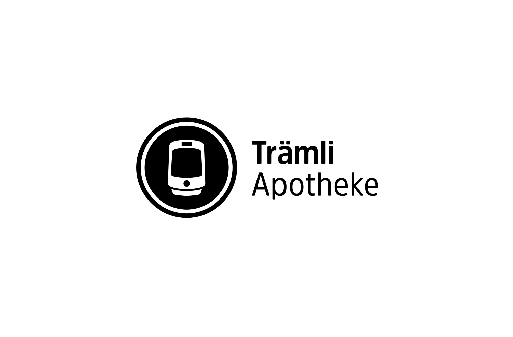

Trämli Apotheke
- Branding
- Logotype
The “Trämli Apotheke” is a newly opened Pharmacy in Weil am Rhein. “Trämli” is the swiss word for a streetcar, and the owner wanted to refer to it cause the Store is right next to a Tram Stop, which plays a big role in gaining in new customers.
